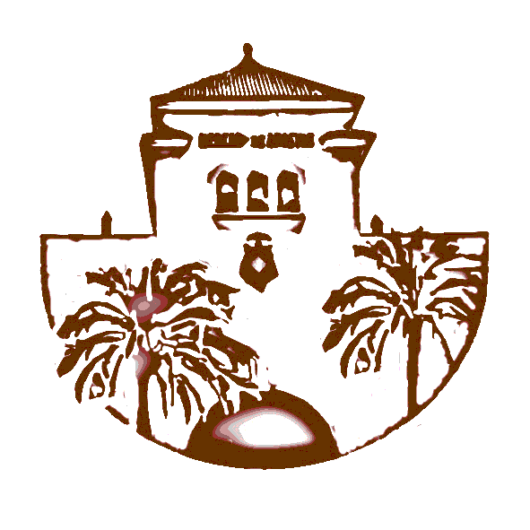

Contenido del Ciclo
- Despliegue de Aplicaciones Web
- Introducción a la Nube Pública
- Itinerario para la Empleabilidad
- Diseño de Interfaces Web
- Programación Web en Entorno Cliente
- Sistemas de Gestión Empresarial (ERP/CRM)

El ciclo formativo de Grado Superior en DAW te prepara para desarrollar, implantar y mantener aplicaciones web.